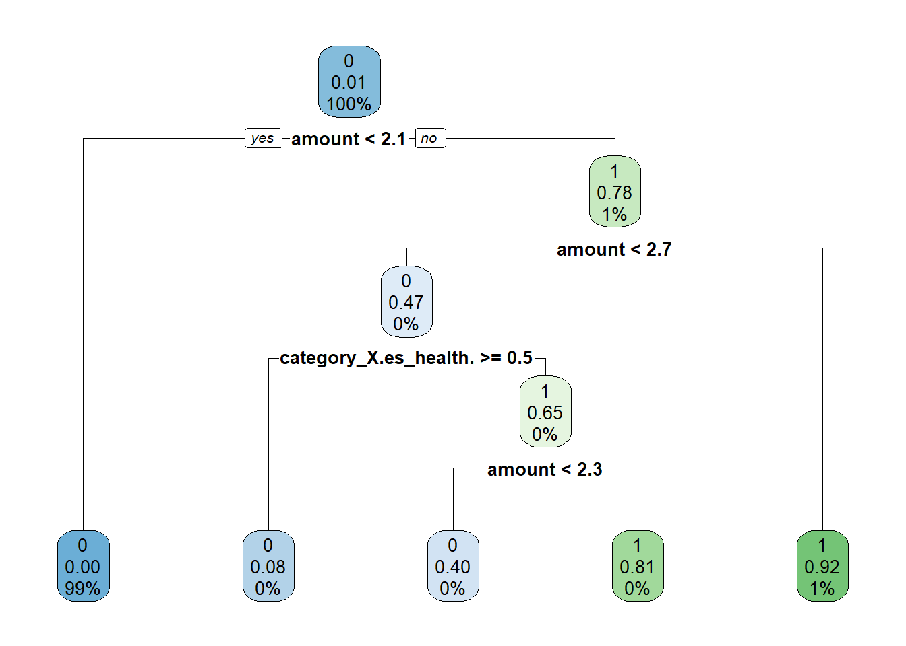
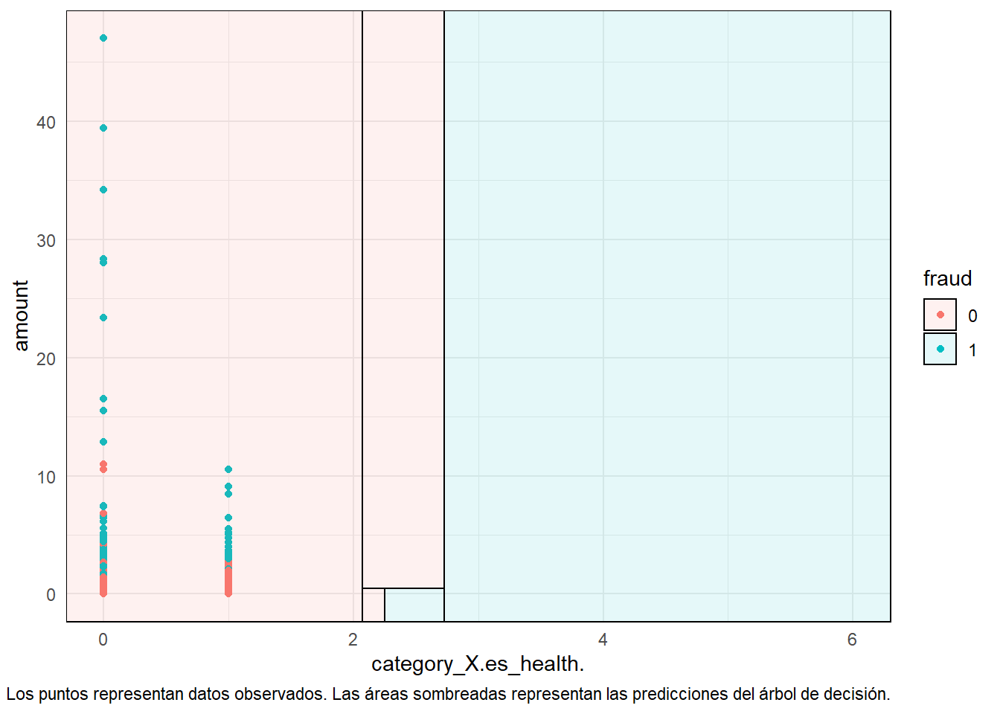

Código
# Carga de paquetes necesarios
knitr::opts_chunk$set(echo = TRUE)
knitr::opts_chunk$set(message = FALSE)
knitr::opts_chunk$set(warning = FALSE)
library(tidyverse)
library(discrim)
library(tidymodels)
library(workflows)Trabajo Práctico n°2
A lo largo de las clases se trabajará con un dataset extraído de Kaggle
# Carga de paquetes necesarios
knitr::opts_chunk$set(echo = TRUE)
knitr::opts_chunk$set(message = FALSE)
knitr::opts_chunk$set(warning = FALSE)
library(tidyverse)
library(discrim)
library(tidymodels)
library(workflows)data <- read_csv('data/df_fraude.csv')
glimpse(data)Rows: 17,839
Columns: 10
$ step <dbl> 0, 0, 0, 0, 0, 0, 0, 0, 0, 0, 0, 0, 0, 0, 0, 0, 0, 0, 0, 0~
$ customer <chr> "'C60351691'", "'C1038996959'", "'C574062699'", "'C8308634~
$ age <chr> "'2'", "'2'", "'2'", "'6'", "'2'", "'4'", "'3'", "'4'", "'~
$ gender <chr> "'F'", "'M'", "'M'", "'M'", "'F'", "'M'", "'M'", "'F'", "'~
$ zipcodeOri <chr> "'28007'", "'28007'", "'28007'", "'28007'", "'28007'", "'2~
$ merchant <chr> "'M1823072687'", "'M348934600'", "'M348934600'", "'M182307~
$ zipMerchant <chr> "'28007'", "'28007'", "'28007'", "'28007'", "'28007'", "'2~
$ category <chr> "'es_transportation'", "'es_transportation'", "'es_transpo~
$ amount <dbl> 36.88, 31.32, 43.75, 14.20, 2.63, 50.90, 15.69, 14.36, 0.1~
$ fraud <dbl> 0, 0, 0, 0, 0, 0, 0, 0, 0, 0, 0, 0, 0, 0, 0, 0, 0, 0, 0, 0~Step: representa el día en que la transacción sucede. En total son 180 steps, por lo que la base de datos es por 6 meses.
Customer: representa el ID de la persona que inicia la transacción. Está formada con la letra C seguida por una secuencia unica de 10 numeros.
Age: esta variable se divide en intervalos de edad, comenzando de 0 a 6 y la letra U que significa Unknown. La edad es Unknow solo para las transacciones que tienen el mismo género que Enterprise. La codificación de los números es:
Gender: esta variable se codifica como F para Mujer, M para Hombre, E para Empresa y U para Unknown.
Merchant: esta variable representa la identificación única de la parte que recibe la transacción. Similar a la identificación del cliente, la secuencia está formada por la letra M, seguida de una serie de 9 números. Hay un total de 50 comerciantes únicos en el conjunto de datos.
Category: hay 15 categorías únicas que etiquetan el tipo general de transacción: transporte, comida, salud, bienestar y belleza, moda, bares y restaurantes, hiper, deportes y juguetes, tecnología, hogar, servicios de hotel, otros servicios, contenidos, viajes, ocio.
Amount: representa el valor de la transacción. Solo hay 52 valores iguales a 0 y ningún valor negativo.
Fraud: una columna indicadora codificada con 0 si la transacción fue limpia y con 1 si la transacción fue fraudulenta.
zipcodeOri y zipMerchant: contienen un valor constante de 28007, que es un código postal en Ansonville, Carolina del Norte, Estados Unidos.
tidymodelsdf <- data |>
select ("gender", "amount", "fraud", "category", "age")|>
filter(age!="'U'" & category != c("'es_transportation'", "'es_food'", "'es_health'"))¿Qué tipo de variable es cada feature?
glimpse(df)Rows: 12,331
Columns: 5
$ gender <chr> "'M'", "'M'", "'F'", "'M'", "'F'", "'F'", "'F'", "'F'", "'F'"~
$ amount <dbl> 31.32, 43.75, 2.63, 50.90, 14.36, 0.10, 44.31, 9.17, 54.83, 9~
$ fraud <dbl> 0, 0, 0, 0, 0, 0, 0, 0, 0, 0, 0, 0, 0, 0, 0, 0, 0, 0, 0, 0, 0~
$ category <chr> "'es_transportation'", "'es_transportation'", "'es_transporta~
$ age <chr> "'2'", "'2'", "'2'", "'4'", "'4'", "'3'", "'2'", "'3'", "'3'"~Cambiemos el tipo de variable según corresponda
df$fraud <- as.factor(df$fraud)
df$age <- as.factor(df$age)
df$gender <- as.factor(df$gender)
df$category <- as.factor(df$category)
glimpse (df)Rows: 12,331
Columns: 5
$ gender <fct> 'M', 'M', 'F', 'M', 'F', 'F', 'F', 'F', 'F', 'M', 'F', 'M', '~
$ amount <dbl> 31.32, 43.75, 2.63, 50.90, 14.36, 0.10, 44.31, 9.17, 54.83, 9~
$ fraud <fct> 0, 0, 0, 0, 0, 0, 0, 0, 0, 0, 0, 0, 0, 0, 0, 0, 0, 0, 0, 0, 0~
$ category <fct> 'es_transportation', 'es_transportation', 'es_transportation'~
$ age <fct> '2', '2', '2', '4', '4', '3', '2', '3', '3', '5', '4', '2', '~
set.seed(456)#setear la semilla
# Create data split for train and test
df_split <- initial_split(df,
prop = 0.8)
# Create training data
df_train <- df_split %>%
training()
# Create testing data
df_test <- df_split %>%
testing()
# Number of rows in train and test dataset
paste0("Total del dataset de entrenamiento: ", nrow(df_train))[1] "Total del dataset de entrenamiento: 9864"paste0("Total del dataset de testeo: ", nrow(df_test))[1] "Total del dataset de testeo: 2467"TidymodelsSi no tenés instalado
tidymodelspodés hacerlo corriendo el siguiente código
install.packages("tidymodels")Al igual que tidyverse, tidymodels está compuesto por un conjunto de paquetes como los siguientes:
rsample: para realizar la división del dataset en entrenamiento, validación y testeo.
recipes: para el preprocesamiento
parnship: para especificar el modelo
yardstick: para evaluar el modelo
reciperecipe_df <- recipe (fraud ~ ., data= df_train) |>
step_scale(all_numeric_predictors(), -all_outcomes()) |>
step_dummy(all_nominal_predictors()) |>
prep()
# Bake
df_train <- bake(recipe_df, new_data=df_train)
df_test <- bake(recipe_df, new_data=df_test)Se puede entrenar cualquier modelo (que este incluído en tidymodels) siguiendo los pasos que se muestran a continuación.
1- Especificar el modelo (eg. Regresión logística, Random Forest, SVM, etc)
2- Con set_engine() se especifíca la familia de modelos
3- Con set_mode() se especifica el tipo de modelo a entrenarse (regresión o clasificación)
4- Usar la función fit () para entrenar el modelo y, dentro de eso, debe proporcionar la notación de la fórmula y el conjunto de datos
##Con los hiperparámetros por default
#Naive Bayes
set.seed(234)
model_NB <- naive_Bayes(smoothness = .8) |>
set_mode("classification") |>
set_engine("naivebayes")
#SVM
set.seed(234)
model_SVM <-
svm_rbf() |>
set_mode("classification") |>
set_engine("kernlab")
#Arboles de decisión
set.seed(234)
model_TREE <- decision_tree() |>
set_engine("rpart") |>
set_mode("classification")
#Random Forest
set.seed(234)
model_RF <- rand_forest() |>
set_engine("ranger") |>
set_mode("classification") |>
set_args(trees = 500)wf_TREE <- workflow() %>%
add_recipe(recipe_df) %>%
add_model(model_TREE)
wf_TREE== Workflow ====================================================================
Preprocessor: Recipe
Model: decision_tree()
-- Preprocessor ----------------------------------------------------------------
2 Recipe Steps
* step_scale()
* step_dummy()
-- Model -----------------------------------------------------------------------
Decision Tree Model Specification (classification)
Computational engine: rpart TREE_fit <- model_TREE%>%
fit(fraud ~ ., data = df_train)
#imprimo el modelo
TREE_fitparsnip model object
n= 9864
node), split, n, loss, yval, (yprob)
* denotes terminal node
1) root 9864 140 0 (0.985806975 0.014193025)
2) amount< 2.070582 9746 48 0 (0.995074903 0.004925097) *
3) amount>=2.070582 118 26 1 (0.220338983 0.779661017)
6) amount< 2.729189 38 18 0 (0.526315789 0.473684211)
12) category_X.es_health.>=0.5 12 1 0 (0.916666667 0.083333333) *
13) category_X.es_health.< 0.5 26 9 1 (0.346153846 0.653846154)
26) amount< 2.251864 10 4 0 (0.600000000 0.400000000) *
27) amount>=2.251864 16 3 1 (0.187500000 0.812500000) *
7) amount>=2.729189 80 6 1 (0.075000000 0.925000000) *Se puede crear una visualización del árbol de decisión utilizando otra función auxiliar.
library(rpart.plot)# para la visualzación del árbol de decisión
TREE_fit |>
extract_fit_engine() |>
rpart.plot(roundint = FALSE)
library(parttree)
library(ggplot2)
library(rpart)
p = ggplot(data = df_train, aes(x = category_X.es_health., y = amount)) +
geom_point(aes(col = fraud)) + scale_x_continuous(limits = c(0, 3))+
theme_minimal()
## Fit a decision tree using the same variables as the above plot
tree = rpart(fraud ~ ., data = df_train)
## Visualise the tree partitions by adding it via geom_parttree()
p +
geom_parttree(data = tree, aes(fill=fraud), alpha = 0.1) +
labs(caption = "Los puntos representan datos observados. Las áreas sombreadas representan las predicciones del árbol de decisión.")